A slip knot is made as indicated. The drum, can or barrel is placed in the slip knot and the free end is secured with a stopper hitch to the standing end.
CHAIN KNOT
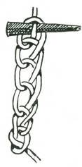
When a rope is too long for its purpose one means of shortening it is the chain knot. remember to put a marlinspike or toggle through the last link before you put a strain on the rope.

DOUBLE CHAIN KNOT
This is the most ornamental of all the rope shortenings. A turn is taken round the standing end and the free end is passed through the loop so formed. In doing this a loop is formed through which the free end is brought. The end is thus passed from one side to the other through the loop preceding. It may be pulled taut when sufficiently shortened and will lock upon the last loop.
TWIST KNOT
This is another easy method of shortening a rope. The rope is laid as in Fig. 1 and then the strands are plaited or braided together.
A marlinspike or toggle is placed between the ropes in the centre to
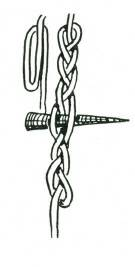
secure the hold of the plait.
FANCY KNOTS
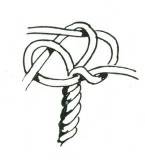

WALL KNOT
Unlay the rope a few inches and then pass each strand through the bight of the strand in front. Illustration shows the wall knot ready to be pulled taut.
STOPPER KNOT
Bring the ends of the wall knot round again and up in the centre

of the knot and pull each one taut separately.
CROWNING KNOT
Commence the crowning as shown here.
The crowning is now ready to be pulled taut. The strands can be back spliced to permanently secure the end of the rope against ravelling or fraying. Crowning may also be used with other fancy knots such as crowning first, then pulling on a wall knot or a
M athew Walker.
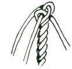
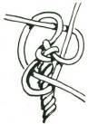
M ANROPE KNOT
This is a fancy knot to put a stop on the end of a rope. Top sketch shows the crowning (in the centre), and lower sketch shows the manrope knot pulled taut.
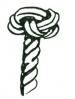
DOUBLEDOUBLE CROWNING KNOT
This knot is started the same as the manrope, but not pulled taut. The ends are laid for a second crown above the crown (similar to the manrope knot) and with the spike the bends of the lower crown are opened, and the strands brought through these bends and pulled taut.
M ATHEW WALKER 1
The strands are laid as in the diagram and then each in turn is pulled taut till the knot is close and tight. The knot itself is rolled up slightly to lay the twist evenly. Pull the strands tight again after this.

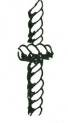
M ATHEW WALKER 2. Finished and rolled tight.
The M athew Walker is reputed to be one of the most difficult
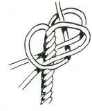

of all knots to undo. The M athew Walker can also be made some distance from the end of the rope and the strands then relaid.
DIAM OND KNOT
Like the M athew Walker, the diamond knot is ornamental–can be made same distance along the rope. The rope is unlaid carefully.
Each strand is brought down alongside the standing end, as
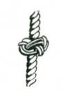
illustrated (top). The strands are then put through the loops formed by the other strands in lower sketch. The strands are hauled taut. The rope relaid. Shows the finished diamond knot.
DOUBLE DIAM OND KNOT
This is made as for the single diamond knot, but the strands follow the lead of the single knot through two single loops. The last strand comes through two double loops. The strands come out through the centre when the knot is pulled taut. All these stopper knots can be used for the ends of lanyards, halyards, yoke lines and also as stoppers on cleats, and for rope buckets.
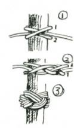
TURK’S HEAD
This is a highly ornamental knot which, instead of being made with the rope strands of the rope itself, is formed with smaller cordage on the rope.
A clovehitch is made as in Fig. 1. This is made slackly to allow the extra strands to be worked through it. Pull the bottom part of the hitch above the top part and put the free end under and up
(Fig. 2). The now bottom strand is pulled above the top part and the free end now over and down. This repeat till the circle is complete. The free end follows round three times. The completed
Turk’s head is shown in Fig. 3.
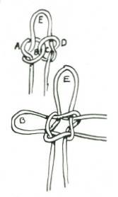
SHAM ROCK KNOT
This may be formed the same way as the true lover’s knot, but the bottom loop is not spliced. It may also be used to form three loops for stays for a mast. It may also be formed by making a knot as top sketch. The loop C is drawn up through loop D and the loop B is drawn up through the loop at A. These form the side loops and the top loop is formed naturally at E.

BUTTON KNOT
Form two crossover hitches, as Fig. 1. Pass the loop end to the left and with the free end form another loop as shown. Now, with the free end, follow the lay as indicated in Fig 2 and lay the strands side by side as for the Turk’s head. When three to five lays have been put through, work the knot tight and use the free ends to fasten the button to the garment. A bootlace makes an excellent button.
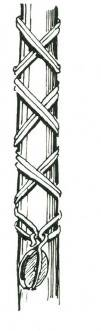
SELVEDGE
To secure a block to a standing spar. The middle of the selvedge is laid on the spar and the two ends are crossed over in turns until the bights at the ends come together. The hook of the block is then put through these two bights.

POINTING A ROPE
The rope is unlaid and a tie put on to prevent it unlaying further. The strands are thinned down gradually, and relaid again.
The end may be stiffened with a small stick or piece of wire. The end can be finished off with any of the crown or wall knots.
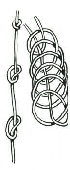
KNOTTED ROPE LADDER
The length of rope is coiled in a series of half-hitches and the end of the rope is passed through the centre, as in illustration on right (except that the coils are held close together as for a coiled rope when it is to be thrown). The coil of half-hitches with the end passed through the centre is turned inside out, that is, the succeeding coils are pulled over each other. The coil is now thrown, and as it pays out a series of overhand knots are made at fairly equal intervals. In making a knot ladder this is the quickest and most efficient method SINGLE ROPE LADDER WITH CHOCKS
This type of ladder has the advantage of being portable and quickly made. The chocks of hardwood are about 6” diameter and
2” deep, and are suitably bored to take the diameter of the rope.
Splice an eye at the top end and seize in a thimble to lash the rope head securely. To secure the chocks, put two strands of seizing between the strands of the rope and then work a wall knot.
Alternatively, insert small pegs between the rope strands, and seize the rope with a binding below the pegs.

LAS HING
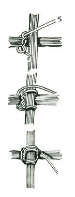
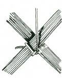
SQUARE LASHING to join poles at right angles.
Start with a timber hitch or a clove hitch below cross bar. If using a timber hitch see that the pull is straight through the eye and not back from it. Pulling back will cut the lashing material.
Put lashing material tightly around upright and cross bar about four complete times.
Frapping turns.–M ake about two or three frapping turns.
These are turns that go round the lashing and pull it taut. These pull the lashing tight. Secure end of frapping turns either by halfhitches or by passing between lashing at the crossover and secure with a half-hitch.
DIAGONAL LASHING for bracing or joining spars at irregular angles.

Start with a timber hitch or a clove hitch and take about three or four full turns vertically.
Pass rope under top spar and make about three of four full turns horizontally.
M ake two or three trapping turns and either secure by two half-hitches on pole or by passing the end between the lashing and the pole and use halt-hitches, on the lashing.


SHEER LASHING to join two poles end to end.
Start with a clove hitch or timber hitch, lash as in 1 and 2 tightly around the two spars four to six times as in 3. Pass free end under lashings and draw tightly two or three times. Secure by passing it through itself, as in 4.
There should be at least two lashings if spars are being joined together.
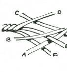
S PLICES
SHORT SPLICING
Unlay the strands and marry them together; butt hard up to each other. The strand D first goes under the standing end of A, but over strand B and over C on the standing end. Thus each strand at either end goes over one strand of the standing end on the opposite side and under the next strand, so that there is a strand of the standing end between each short side of the splice. Continue working the free strand of each end four or five times into the strands of the standing end.
LONG SPLICING

The strands are unlaid for a considerable length and then married as for the short splice. Then the one strand is unlaid and its married counterpart is laid along its place in the rope.
The two centres are simply held with a crossover knot, and the strands thinned down and spliced as for a short splice. The end strands are finished with a crossover knot and again the strands are thinned down and finished as for a short splice. This long splice does not appreciably thicken a rope which may be thus spliced to
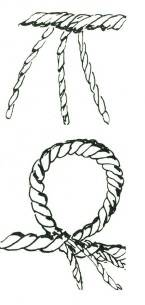
go through a sheave.
LOOP SPLICE WITHOUT A FREE END
The rope is untwisted to the required place, as in top illustration. The free ends so formed are then spliced back along the rope after the loop has been formed.

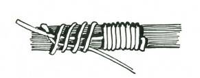
EYE SPLICE
A neat eye can be made in a rope end by an ordinary short splice after the loop or eye has been formed.
WHIPPING
This is another method. After pulling taut, the two free ends
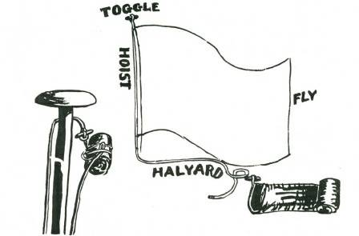
are cut close in and the whole binding is smooth and neat.
TO FOLD A FLAG FOR “BREAKING”
The flag is folded neatly along its length four to eight times, and then the fly is either folded, concertina fashion, or rolled towards the hoist. The toggle is uppermost on the hoist, and the halyard is on the lower side of the hoist.
The halyard is wrapped tightly round the flag, and then bent, and the loop pressed under the last rollings, held by the pressure of the cord against the bunting of the flag.
The toggle is fastened to the eye of the halyard on the mast, and the free end of the flag hoist is fastened to the other end of the

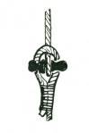
mast halyard with a double sheet or crossover bend.
LOOP SPLICE
The strands are unlaid and laid side by side till the loop is the required length. The strands of the free ends are spliced into the ropes of the standing ends as for a short splice.
Toggle and eye–showing one application of splicing and
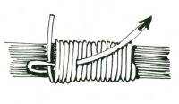
whipping. Toggle is spliced and eye is whipped in sketch.
BINDING or WHIPPING
WHIPPING
Before the finish of the binding a loop formed from the end is laid under the binding at the start. This end is bent back to form a loop and the last six to twelve turns bind over this loop. At the last turn of the binding the cord is put through the loop and the free end of the loop is pulled tightly, thus drawing the end of the binding beneath the last turn.
NETTING
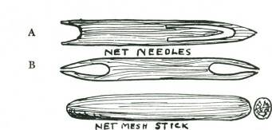
Hammocks and nets are made by the use of a netting needle and a mesh stick. Either of the two types of netting needle shown in
Fig. 1 are suitable and easily made from a thin piece of hardwood or bamboo. The netting needles may be about 8 to 9 inches long and from f inch to 1 inch wide. The mesh stick may be about 5 inches long, oval about ¾ x ¼. The netting cord is put on to the netting needles as for an ordinary shuttle with needle B, and with needle A the cord is looped round the pin in the centre of the eye.
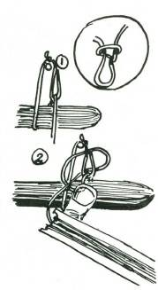
At one end of the string tie a loop and place the knot on a conveniently high nail or hook. The mesh stick is put under the loop and the needle with cord passed through as in Fig. 3. The needle and cord are passed in front of the loop formed in Fig. 3 and under the original loop, while at the same time the other end of the

cord is held on to the mesh stick with the thumb of the left hand.
The knot is pulled taut.

A succession of these loops are formed until the requisite width is reached, then this first series of loops are placed through a rod or cord, and the loops are netted on to them until the requisite length is reached.
ANCHORING A PEG IN S AND OR S NOW
The only way to anchor a rope into soft sand is to attach it to a peg, and bury the peg in the sand.
Scrape a trench in the sand to a depth of between a foot and eighteen inches, deeper if high winds or very stormy weather are expected. Pass the rope round the centre of the peg; scratch a channel for it at right angles to the peg trench.
Fill in the trench and rope channel, and fasten the free end of the rope to the standing end with a stopper hitch, and pull taut.
The buried peg should hold a tent rope in sand under all normal weather conditions.
TO ANCHOR A ROPE IN OPEN GROUND
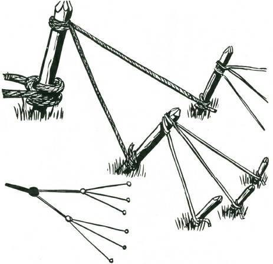